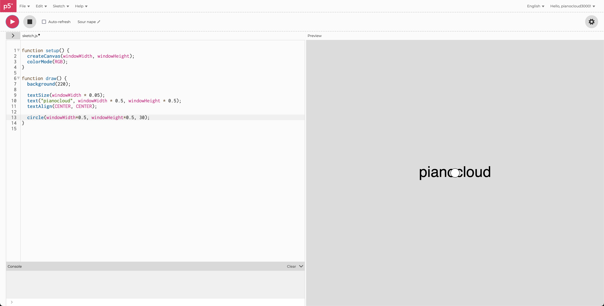
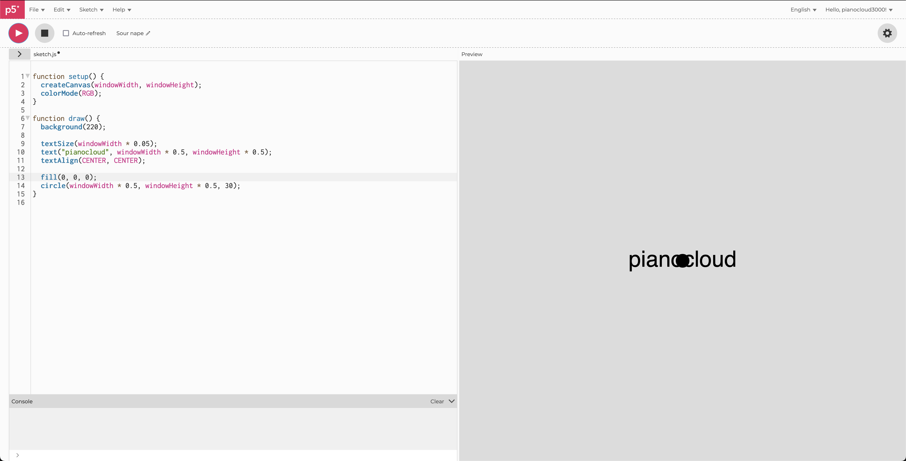
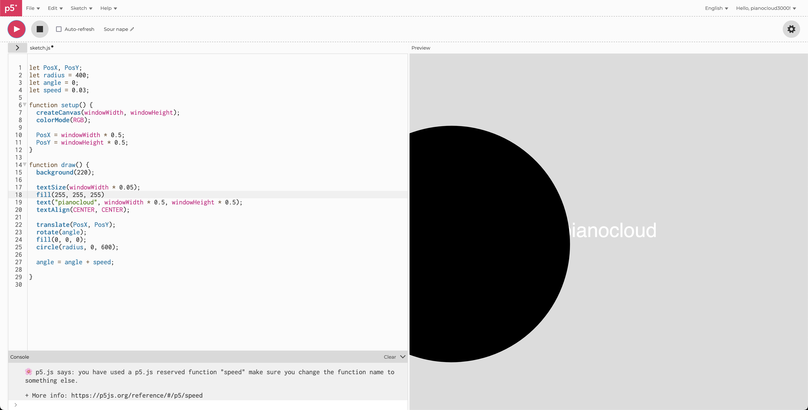

time & oscillation
by pianocloud
- Wanted the canvas to be the window width and height. At the center, “pianocloud.” Added a circle. Now, how to make the circle rotate around the text?

- Wait, let me give the circle a dark fill. There. Ok, now really, how to make the circle rotate around the text?

- Oh, wait. Let me clean up the positions with code first. Ok… there. Now back to making the circle roate around the text? In a perfect circle?

- Look at that! Found p5.js code online that did the rotating thing. Dropped it in and it worked!

- Would be cooler if the circle was large though. There we go. How about we make the text white too? K!

- Last but not least: let’s make the background switch colors on a timer. Oop, look at that. Code for it online. It uses millis too. Ok, I think I get how it works. Let me drop it in, and…

Viola!